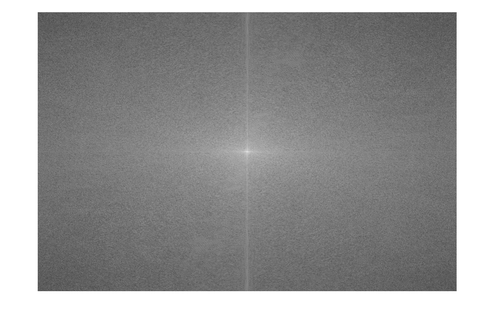
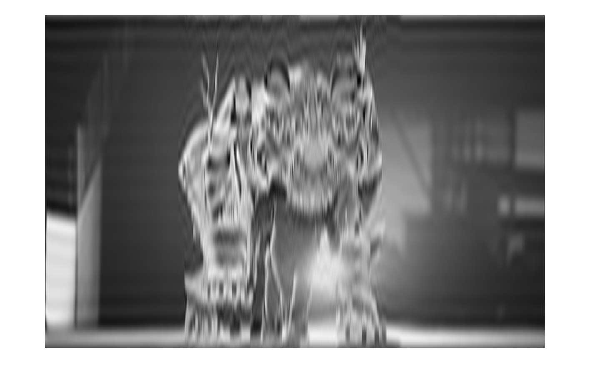
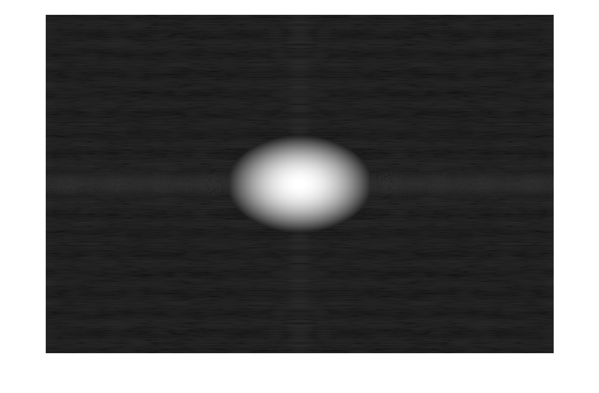
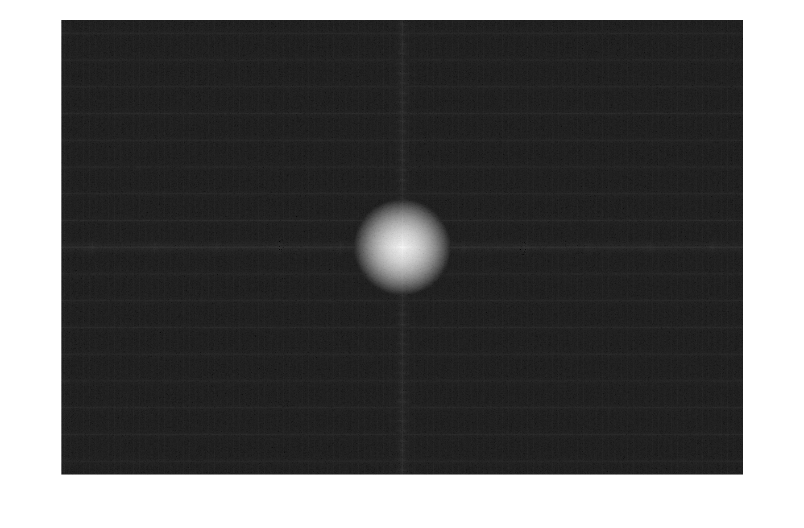
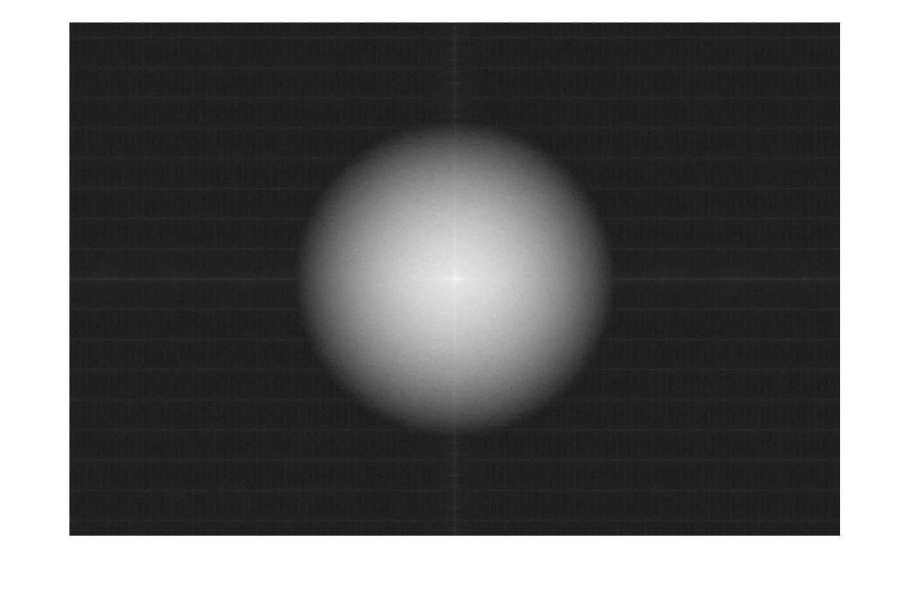
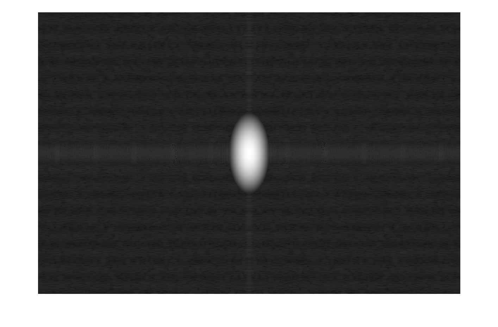
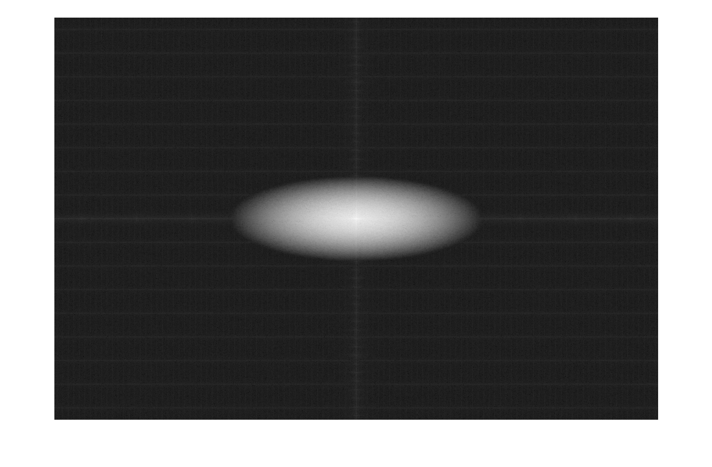
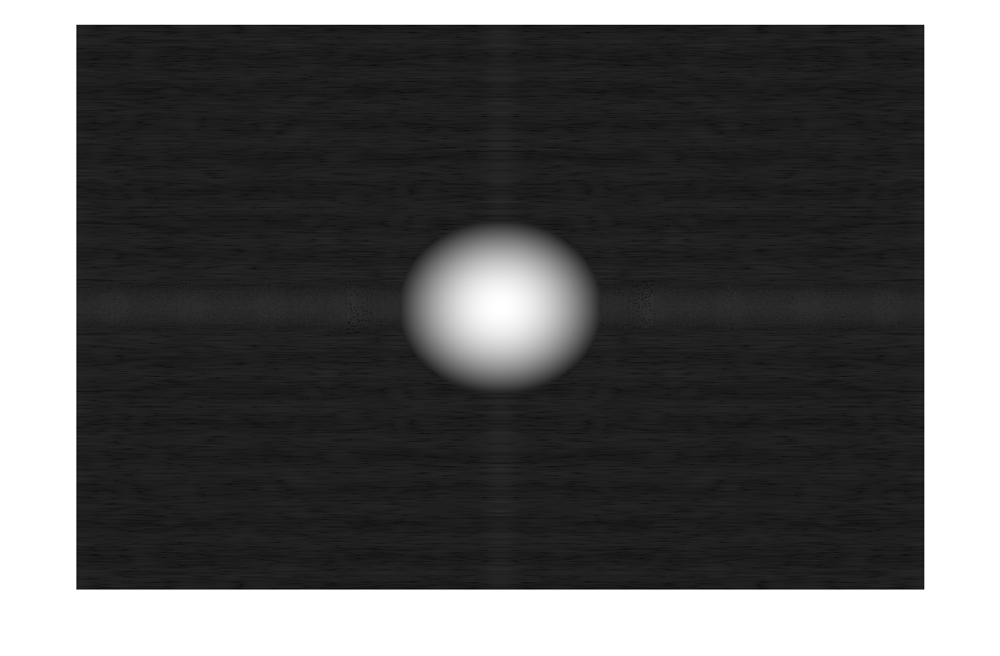

Image Processing HW3
Contents
2a
tiger=imread('tiger.png');
fftshow(tiger);

2b
boxfilt_b = boxfilt(tiger,31,31);
imshow(boxfilt_b,[]);
2c
tiger_2c = freqflt(tiger,boxfilt_b);
imshow(tiger_2c,[]);

2d
boxfilt_d = boxfilt(tiger,91,91);
imshow(uint8(boxfilt_d),[]);
--
tiger_2d = freqflt(tiger,boxfilt_d);
imshow(tiger_2d,[]);
2e
boxfilt_e = boxfilt(tiger,91,31);
tiger_2e = freqflt(tiger,boxfilt_e);
imshow(tiger_2e,[]);
2f
boxfilt_f = boxfilt(tiger,91,399);
tiger_2f = freqflt(tiger,boxfilt_f);
imshow(tiger_2f,[]);
2g
boxfilt_g = boxfilt(tiger,599,31);
tiger_2g = freqflt(tiger,boxfilt_g);
imshow(tiger_2g,[]);

3a
C1 = [100,0; 0,100];
guassfilt_a = guassflt(tiger,C1);
fftshow(guassfilt_a);

3b
tiger_3b = freqflt(tiger,guassfilt_a);
imshow(tiger_3b,[]);
3c
fftshow(tiger_3b);

3d
C2 = [900,0; 0,900];
guassfilt_d = guassflt(tiger,C2);
fftshow(guassfilt_d);

--
tiger_3d = freqflt(tiger,guassfilt_d);
imshow(tiger_3d,[]);
--
fftshow(tiger_3d);

3e
C3 = [900,0; 0,100];
guassfilt_e = guassflt(tiger,C3);
fftshow(guassfilt_e);

--
tiger_3e = freqflt(tiger,guassfilt_e);
imshow(tiger_3e,[]);
--
fftshow(tiger_3e);

3f
R = [cos(pi/6), -sin(pi/6); sin(pi/6), cos(pi/6)];
D = [900, 0; 0 100];
C4 = transpose(R)*D*R;
guassfilt_f = guassflt(tiger,C4);
fftshow(guassfilt_f);

3g
tiger_3f = freqflt(tiger,guassfilt_f);
imshow(tiger_3f,[]);
4a
A = zeros(256,256);
H = [-1,-2,-1;-2,28,-2;-1,-2,-1]./16;
Y = filter2(H,A);
fftshow(Y);
4b
Y2 = filter2(H,tiger);
imshow(uint8(Y2));